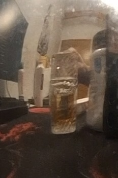
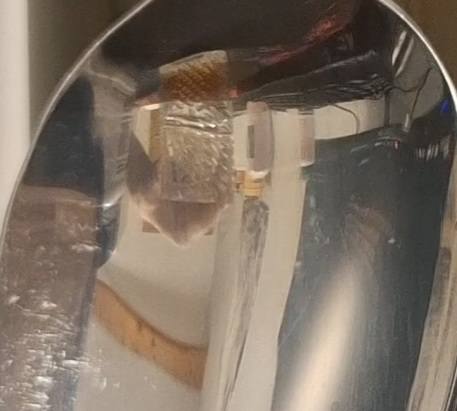
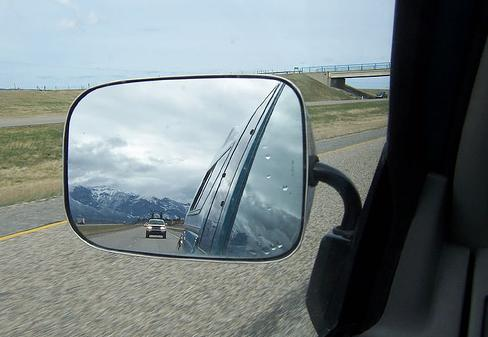

Rasprava: Što smo naučili iz pokusa?
Odgovori na sljedeća pitanja na temelju onoga što si vidio/vidjela u pokusu sa žlicom. Klikni na odgovor koji misliš da je točan.
1. Što se dogodilo sa slikom predmeta kada smo ga približili ispupčenoj (vanjskoj) strani žlice?

Slika 1. Izgled predmeta u ispupčenom djelu žlice.
2. Što se dogodilo sa slikom kada smo predmet udaljili od ispupčene strane žlice?
3. Što smo vidjeli kada smo pogledali u udubljenu (unutrašnju) stranu žlice, a predmet je bio dalje od žlice?

Slika 2. Izgled predmeta u udubljenom djelu žlice.
4. Zašto predmet u ravnom zrcalu izgleda normalno, a u žlici drugačije?
5. Zašto vozač u retrovizoru vidi automobil iza sebe manji nego što stvarno jest?

Slika 3. Izvor : Autodijelovi